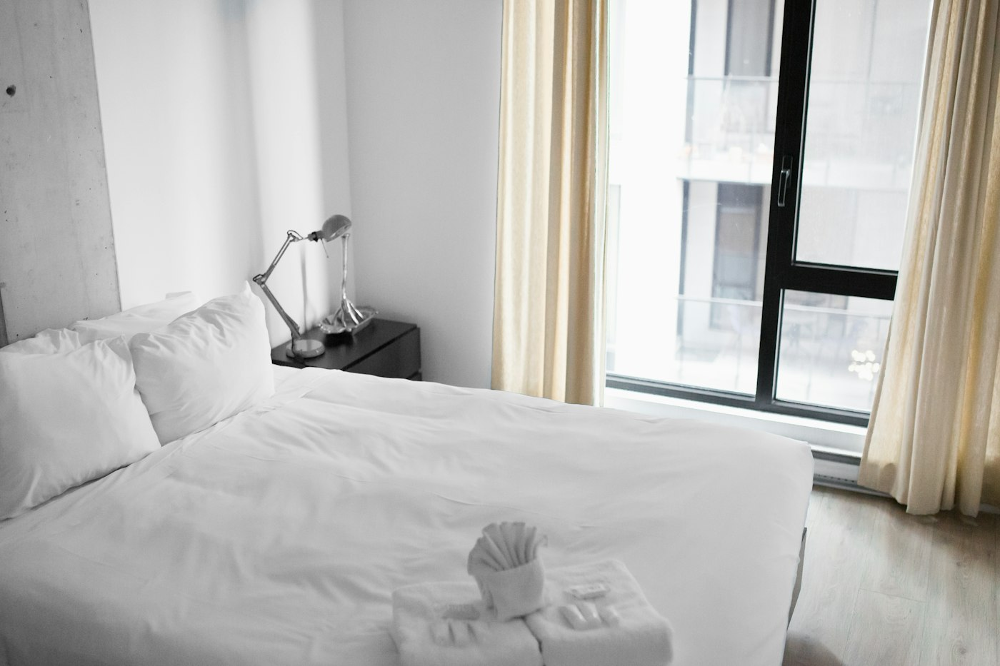
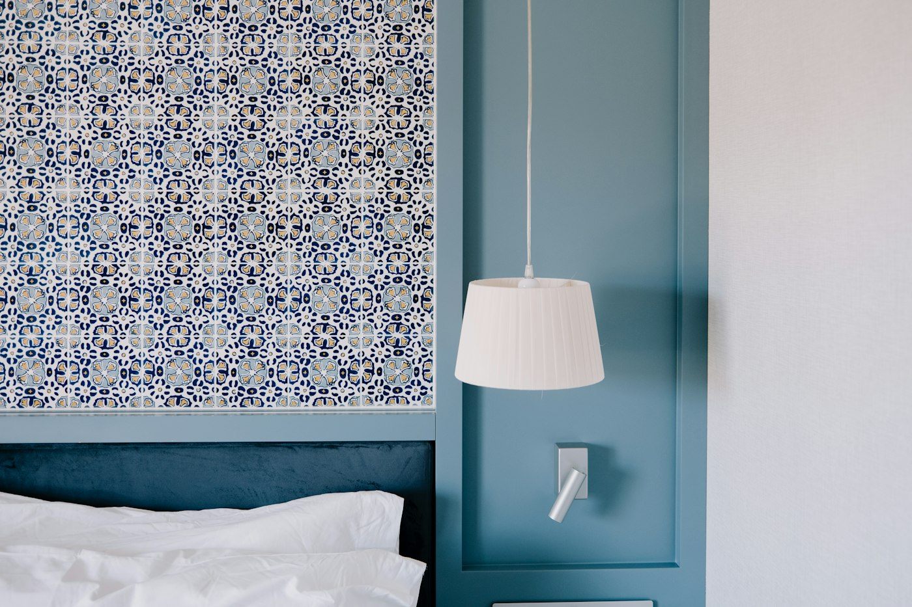
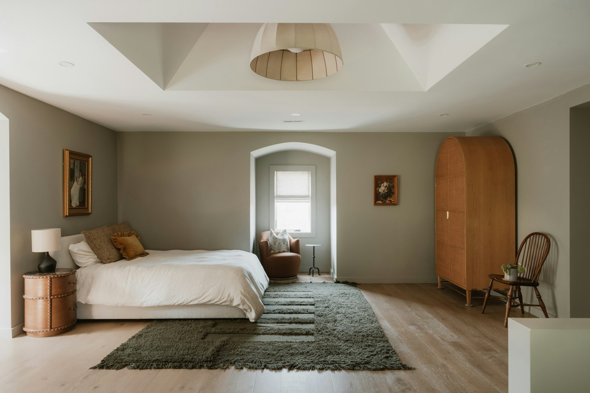
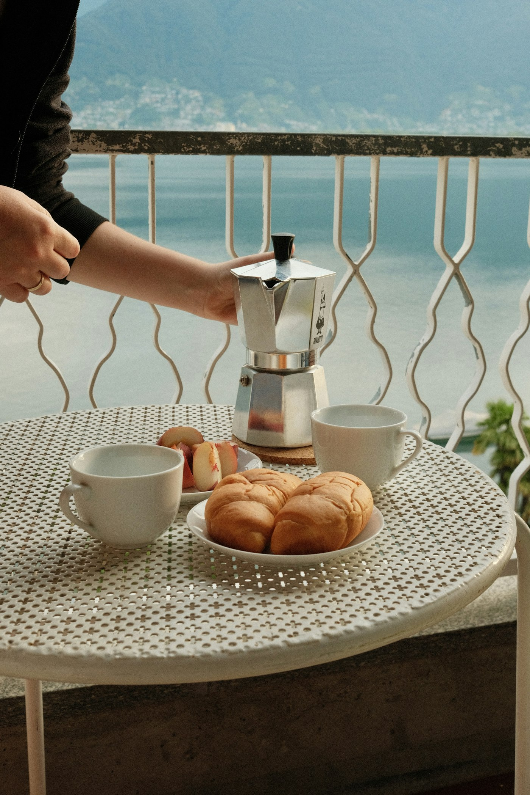

01 / GARDEN20 м² · ДО 2 ГОСТЕЙ01
Садовый
Тихий номер с видом во внутренний двор и лимонные деревья.
от 8 400 ₽ / ночь
 У МОРЯ / ТИХОЕ УТРО
У МОРЯ / ТИХОЕ УТРОТИХАЯ БУХТА / 18 НОМЕРОВ
Восемнадцать номеров над тихой бухтой. Лестница к воде, лимонный двор и завтрак на террасе до одиннадцати.
Выбрать свой номер01 / МЕСТО
Casa Marea — всего 18 номеров, терраса с видом на воду и тропинка к пляжу. В номере оставили место для книги и утреннего кофе, а на террасе подают завтрак до одиннадцати.
02 / НОМЕРА
Три категории номеров: для короткого побега к морю, поездки вдвоём или долгого семейного отдыха.

01 / GARDENТихий номер с видом во внутренний двор и лимонные деревья.

02 / SEAСветлый номер с балконом для вечернего чая и видом на горизонт.

03 / TERRACEОтдельная гостиная и большая терраса для тех, кто остаётся надолго.
03 / ДЕТАЛИ
Завтрак на тенистой террасе. Сумка с полотенцем у двери. Кофе после прогулки. Всё, что делает несколько дней настоящим отдыхом.

ЗАВТРАК / ДО 11:0004 / ВАША ПОЕЗДКА
Рассчитайте поездку и сохраните план. Итог учитывает сезон и выбранные услуги; фактическую доступность номеров уточняют отдельно.
Расчёт сохранится в этом браузере. Его можно скачать текстовым файлом или удалить после поездки.